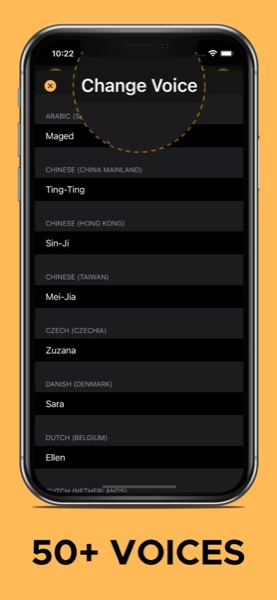
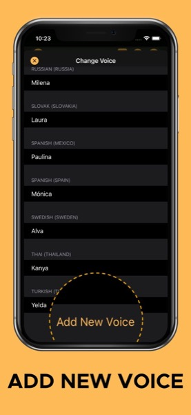

Listen to PDFs and web pages on your iPhone
Reader turns text into speech. Open a PDF, a web article or a scanned page, press play, and listen while you walk, drive or rest your eyes.
Download on the App Store Free to download, with an optional Premium subscription.


What you can do
- Listen to PDFs and websites: import from the Files app or straight from a web page.
- Scan and listen: scan printed pages with the camera or pick photos, then hear the text.
- Speak now or later: start listening right away, or save it to your list for later.
- Background play: keep listening with the screen locked, like a song, with controls on the lock screen.
- Speed up to 8x: slow it down to follow closely, or speed it up to get through more.
- 50+ voices in 35+ languages, and you can add new voices.
- Easy reading: a clean web reader view, a newspaper-style column view, colour themes and search inside PDFs.
- Stay organised: unlimited folders, and password protection for files and folders.
Step-by-step guides
- How to make your iPhone read text aloudThe free built-in way, and when an app works better.
- How to have a PDF read aloud on iPhoneListen to a long document from start to finish.
- How to listen to web articles on iPhoneTurn your reading list into something you can hear.
- How to listen faster: speed listening on iPhoneGet through more reading by raising the voice speed.
Who uses it
Students with long reading lists, commuters, people who prefer listening to reading, people learning a language who want to hear the words, and anyone whose eyes are tired of screens.